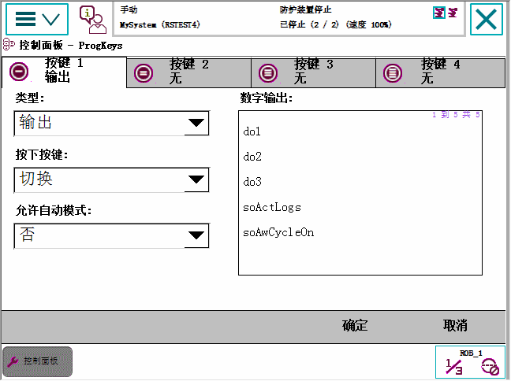

预设按键是 FlexPendant 上四个硬件按钮，可用于由用户设置的专用特定功能。 请参阅硬按钮。
对这些按键进行编程后可简化程序编程或测试。它们也可用于启动 FlexPendant 上的菜单。
使用以下程序设置程控键：
操作 | |||
1 | 在 ABB 菜单上，点击 Control Panel（控制面板）。 | ||
2 | 点击 ProgKeys。  | ||
3 | 选择要设置的按键，即上方选择列表中的按键 1-4。 | ||
4 | 点击 Type（类型）菜单选择动作的类型：
| ||
5 | 如果选择 Input（输入）类型。
| ||
6 | 如果选择 Output（输出）。
按下按键功能:
| ||
7 | 如果选择 System（系统）。
| ||
8 | 根据上述步骤 3 到 7 设置其它按键. | ||
9 | 点击 OK（确定）以保存设置。 |